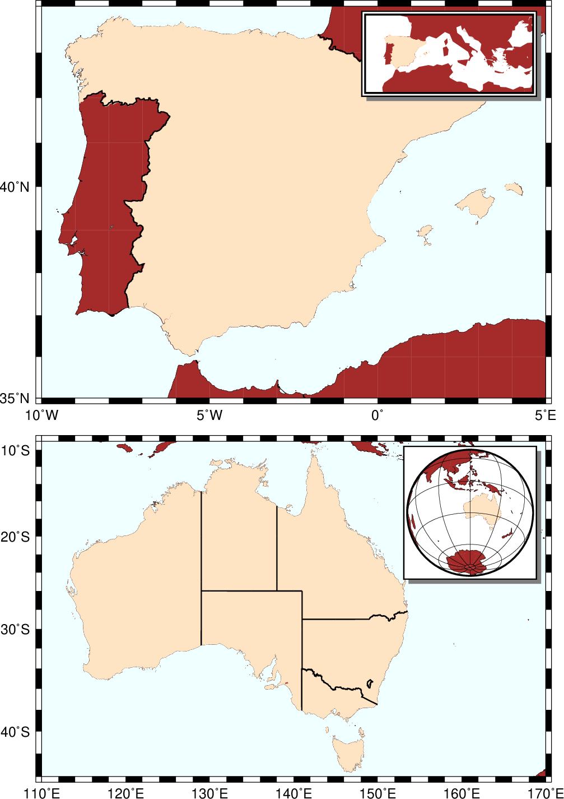

(44) Map inserts¶
In this example show how the two modules psbasemap and mapproject can be used to place map inserts on top of your map. The map insert is usually intended for placing a smaller-scale version of the larger geographical context of your main plot, so that reader unfamiliar with the detailed map can see what region we are looking at. While the Australia example is simplest since we know the insert will be a square map, the Spain example requires us to compute the dimensions of the insert first, via mapproject, so that we can determine exact insert dimensions.
#!/bin/bash
# GMT EXAMPLE 44
# $Id$
#
# Purpose: Illustrate use of map inserts
# GMT modules: pscoast, psbasemap, mapproject
# Unix progs: read
#
ps=example_44.ps
# Bottom map of Australia
gmt pscoast -R110E/170E/44S/9S -JM6i -P -Baf -BWSne -Wfaint -N2/1p -EAU+gbisque -Gbrown -Sazure1 -Da -K -Xc --FORMAT_GEO_MAP=dddF > $ps
gmt psbasemap -R -J -O -K -DjTR+w1.5i+o0.15i/0.1i+stmp -F+gwhite+p1p+c0.1c+s >> $ps
read x0 y0 w h < tmp
gmt pscoast -Rg -JG120/30S/$w -Da -Gbrown -A5000 -Bg -Wfaint -EAU+gbisque -O -K -X$x0 -Y$y0 >> $ps
gmt psxy -R -J -O -K -T -X-${x0} -Y-${y0} >> $ps
# Determine size of insert map of Europe
gmt mapproject -R15W/35E/30N/48N -JM2i -W > tmp
read w h < tmp
gmt pscoast -R10W/5E/35N/44N -JM6i -Baf -BWSne -EES+gbisque -Gbrown -Wfaint -N1/1p -Sazure1 -Df -O -K -Y4.5i --FORMAT_GEO_MAP=dddF >> $ps
gmt psbasemap -R -J -O -K -DjTR+w$w/$h+o0.15i/0.1i+stmp -F+gwhite+p1p+c0.1c+s >> $ps
read x0 y0 w h < tmp
gmt pscoast -R15W/35E/30N/48N -JM$w -Da -Gbrown -B0 -EES+gbisque -O -K -X$x0 -Y$y0 --MAP_FRAME_TYPE=plain >> $ps
gmt psxy -R -J -O -T -X-${x0} -Y-${y0} >> $ps
rm -f tmp

{kind=link}
Map Inserts.